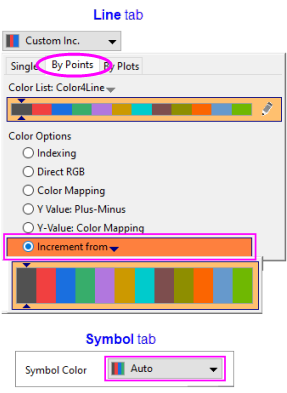
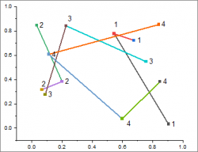
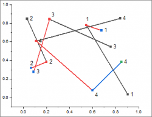
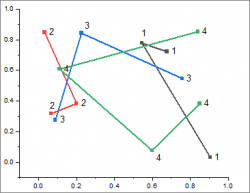

Die Registerkarte Teildatensatz (Details Zeichnung)
PD-Subset-tab
Diese Registerkarte wird verwendet, um die Datenpunkte in einer Zeichnung als mehrere Teildatensätze zu gruppieren. In einem allgemeinen 2D-Diagramm sind die Bedienelemente die gleichen wie in der Gruppe Teildatensatz auf der Registerkarte Abstände.
|
|
|
Allgemeine 2D-Punktdiagramme
|
Hierarchisches Edge Bundling
|
Allgemeine 2D-Punktdiagramme
Mit der Option Teildatensatz aktivieren können Sie steuern, ob die Spalte in Teildatensätze unterteilt werden sollte.
| Teildatensatz aktivieren |
- Kein: Die Säulen werden NICHT in Teildatensätze unterteilt.
- Nach Größe: Teilen Sie die Säulen in Teildatensätze, indem Sie die Größe der Teilsätze festlegen. Wenn die Teildatensatzgröße mit 0 festgelegt ist, wird kein Teildatensatz verwendet.
- Nach Spalte: Die Spalten werden nach kategorialen Werten in einer Arbeitsblattspalte in Teildatensätze unterteilt. Legen Sie Ihre Arbeitsblattspalte mittels der Auswahlliste fest.
|
| Inkrement |
Legen Sie fest, wie die Inkrementliste auf die aktuelle Zeichnung angewendet werden soll, wenn Sie Farbe auf Inkrementieren von auf der Registerkarte Nach Punkten der Farbauswahl gesetzt haben.
- Kein: Die Inkrementliste wird auf die Punkte angewendet, unabhängig von der Einstellung von Teildatensatz aktivieren.
- Innerhalb des Teildatensatzes: Die Inkrementliste wird auf die Punkte innerhalb jedes Teildatensatzes angewendet.
- Zwischen den Teildatensätzen: Die Inkrementliste wird auf die Punkte zwischen den Teildatensätzen angewendet. Alle Punkte im gleichen Teildatensatz hat die gleiche Farbe.
|
| Abstand zwischen Teildatensätzen (%) |
Wenn die Größe des Teildatensatzes nicht gleich 0 ist, können Sie den Abstand zwischen Teildatensätzen (%) festlegen, entweder durch Auswahl einer Anzahl aus der Auswahlliste oder die direkte Eingabe eines Werts. Dies ist eine Prozentangabe der Breite der Säulen/Balken. |
Linien- und Linien-Punktdiagramme
Wenn auf der Registerkarte Linie die Option Innerhalb des Teildatensatzes verbinden aktiviert ist (Standard), können Sie ein einzelnes Linien- oder Punkt-Liniendiagramm in Teildatensätze aufteilen, entweder nach Größe (Anzahl der Datenpunkte) oder nach Spalte (Kategorien).
Wenn Sie die Linie in Teildatensätze aufgeteilt haben, können Sie Liniensegmente (Teildatensätze) einzeln modifizieren. Das folgende Beispiel zeigt das Setzen der Linienfarbe (Registerkarte Linie) auf Inkrementieren von der ersten Farbe (Charcoal) in Origins Standardfarbliste Color4Line. Der Standard für die Symbolfarbe (Registerkarte Symbol) ist Auto, und sie folgt der Linienfarbe. Abhängig von der Einstellung von Inkrement auf der Registerkarte Teildatensatz im Dialog Details Zeichnung werden Farben von dieser Liste auf Elemente nacheinander angewendet.
| Linien-/Symbolfarbe |
Inkrement |
Ergebnisdiagramm |
Details |
|  |
Kein |
 |
Die Linienfarbe ist auf Inkrementieren von der ersten Farbe auf der Farbliste gesetzt. Die Symbolfarbe ist Auto (folgt der Linienfarbe). Das heißt, Linie 1 beginnt Charcoal (Kohlschwarz) und inkrementiert bis zur nächsten Farbe in der Liste: Rot. Übersprungene Farben in der Inkrementliste werden den "fehlenden" Liniensegmenten zugewiesen -- die Segmente, die durch das Unterbrechen der Linie in Teildatensätze entfernt wurden (z. B. beginnt Linie 1 mit Kohlschwarz > Rot und Linie 2 mit Grün, weil Blau für das fehlende Segment, das die Linien 1 und 2 verbindet, übersprungen wird).
|
| Innerhalb von Teildatensätzen |
 |
Die Linienfarbe ist auf Inkrementieren von der ersten Farbe auf der Farbliste gesetzt. Die Symbolfarbe ist Auto (folgt der Linienfarbe). Die Linienfarbe inkrementiert innerhalb von jedem Teildatensatz und inkrementiert dabei durch Kohlschwarz > Rot > Blau > etc., angefangen beim ersten gezeichneten Punkt in jedem Teildatensatz. |
| Zwischen Teildatensätzen |
 |
Die Linienfarbe ist auf Inkrementieren von der ersten Farbe auf der Farbliste gesetzt. Die Symbolfarbe ist Auto (folgt der Linienfarbe). Die Linienfarbe inkrementiert zwischen jedem Teildatensatz (d. h., für jeden Teildatensatz wird eine einzelne Linienfarbe verwendet), angefangen mit Kohlschwarz. Teildatensatz 2 ist rot, Teildatensatz 3 ist blau und Teildatensatz 4 ist grün. |
_Subset_Tab/Tip_icon.png) | Beachten Sie, dass wird in diesem Beispiel die Symbolfarbe auf Auto gelassen haben, aber die Farbe dieses Elements wie die Linienfarbe auch benutzerdefiniert angepasst werden kann. In der Tat kann jede Eigenschaft -- Symbolfarbe, Linienstil, Linienbreite etc. -- über eine anpassbare Liste auf Inkrementieren gesetzt werden. Wir können zum Beispiel den Linienstil gemäß unserer kategorialen Spalte Col(A) setzen. Dadurch würde eine benutzerdefinierbare Registerkarte Liste des Linienstils zum Dialog Details Zeichnung hinzugefügt. Siehe Datensatz zum Einstellen der Diagrammfarbe verwenden und Datensatz zum Festlegen der Diagrammeigenschaften verwenden. |
Hierarchisches Edge Bundling
Legen Sie fest, ob die Blätter als mehrere Teildatensätze mit einer festgelegten Spalte gruppiert werden. Dieses Bedienelement ist das gleiche wie Teildatensatz aktivieren=Nach Spalte in allgemeinen 2D-Diagrammen.
Abstand zwischen Teildatensätzen (%)
Legen Sie den Abstand zwischen nebeneinander liegenden Teildatensätzen fest, entweder durch Auswahl einer Anzahl aus der Auswahlliste oder die direkte Eingabe eines Werts. Dies ist ein Prozentsatz der Winkellänge/-anzahl der Teildatensätze.